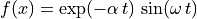
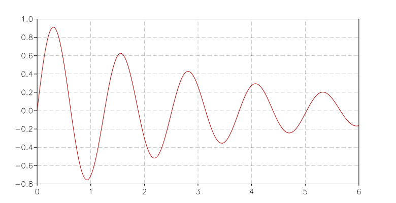
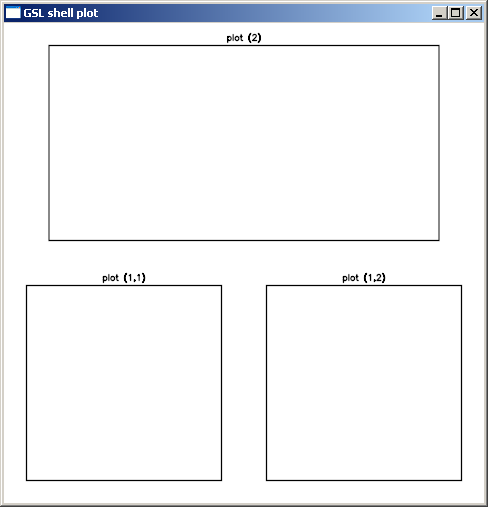
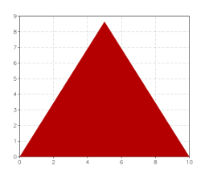

When you are working with a lot of numbers and complicated functions, it is often useful to visualize the data.
GSL Shell offers a graphics module that allows you to produce beautiful graphics with a very rich interface and almost unlimited possibilities.
The graphics module in GSL Shell is implemented using the excellent Anti-Grain Geometry library, version 2.5, of Maxim Shemanarev.
GSL Shell offers a graphics interface with few but powerful functions that, if used appropriately, allow the user to produce a wide range of plot types.
Let’s start with a simple example. Suppose that we want to plot the function:

where α and ω are constants and t varies from 0 to t1.
Before starting we need to note a couple of things.
The mathematical functions like exp, sin, cos are contained in the ‘math’ module.
You can use use'math' to make them directly available.
The graphical functions are in the module ‘graph’.
In order to access them you can use the use() function or just prefix all the functions with the module name like, for example, graph.plot.
Choose whatever option you prefer, it is just a matter of taste.
So now we can come back to our mathematical function.
We can plot this function with GSL Shell using the following instructions:
use'math'functionmyplot(alpha,omega,t1)-- create a new plot, it is not shown for the momentlocalp=graph.plot('f(x) = exp(-a t) sin(w t)')-- we create a line that corresponds to our functionlocalln=graph.fxline(|t|exp(-alpha*t)*sin(omega*t),0,t1)-- we add the line to the plot and show itp:addline(ln,'red')p:show()returnpend
Now you just have to call the ‘myplot’ function. For example:
myplot(0.3,5,6)

The function graph.fxline() takes three arguments, the function to plot and the initial and final values of the variable. By default, the function will be sampled with 256 points, but if you want, you can provide the number of sample points as a fourth argument.
In this example, we have used the graph.plot() function to create a plot, the graph.fxline() function to create the line to draw and the method addline() to add the line to the plot (in red). These three operations can be done with a single function, graph.fxplot(). It can be called as follows:
p=graph.fxplot(|x|sin(x),0,8*pi)
where the first argument is the function to plot and the following
arguments are the limits of the range of the independent variable x.
You may wish to add a title to the plot using the title attribute and save it in a file as an image using the save() method. Here’s how you do it in two lines of code:
For many types of plots, you don’t need to use the graphics primitives, as GSL Shell provides higher level plotting functions.
In this section, we give an overview and a description of all the higher level plotting functions.
Produces a plot of the function f(x) for x going from xi to xs.
The last optional parameter n is the number of sampling points to use and, if not specified, the default value of 256 will be used.
The function returns the plot itself.
Produces a plot of the function f(i) where ‘i’ is an integer variable going from a to b.
In the second abbreviated form, a takes the default value of one.
The function returns the plot itself.
Example:
-- plot the 'choose' function for some integer valuesgraph.fiplot(|i|sf.choose(12,i),12)-- plot of a geometric seriesgraph.fiplot(|n|0.9^n,0,36)
Produces a bar plot of the function f(i) where i is an integer ranging from a to b.
The parameter fill_ratio determines the width of the bars and is by default equal to 1.
When a smaller value is provided for fill_ratio, the bars will be drawn with a smaller width along the x axis.
This function returns a graphical object of type Path given by the points (x, f(x)) for x going from xi to xs with n sampling points.
Example:
use'math'-- we create a 'path' for the function f(x) = sin(x)*exp(-0.1*x)-- and plot itp=graph.plot('Example')line=graph.fxline(|x|sin(x)*exp(-0.1*x),0,10*pi)p:addline(line)p:show()
Example:
You can very easily produce a nice illustration of the “area below a curve” with the following commands:
This function returns a graphical object of type Path given by the points (i, f(i)) where ‘i’ is an integer variable going from a to b. If a is omitted, values will be in the interval 1 .. b.
This function takes two column matrices of dimension N as arguments and returns a graphical object of type Path given by the points (x[i], y[i]) where i goes from 1 to N.
Example:
use'math'N=256sio2n=|w|sqrt(1.4923+0.61497*w^2/(w^2-0.115^2)-0.01059*w^2)-- define a matrix with wavelength and refractive index in each columnd=matrix.new(N,2,function(i,j)localw=0.4*(i-1)/(N-1)+0.4returnj==1andworsio2n(w)end)p=graph.plot('SiO2 dispersion curve in visible range')line=graph.xyline(d:col(1),d:col(2))p:addline(line)p:show()
This function takes an iterator function f and returns a Path given by the points (x, y) returned by the iterator f.
The variant ipathp() is able to treat the case when the function f fails and continues by calling the iterator again.
Example
In the following example, we show how to create a circle using an iterator to generate the points.
We first define an iterator that uses a counter to generate the points and then we pass the iterator to the function ipath().
This way, we obtain an object of type Path and we can add into a plot.:
use'math'-- create a simple iterator that returns n points uniformly spaced-- on a circle centered in (x0, y0) with radius Rcircle=function(x0,y0,R,n)localk=0returnfunction()ifk<=nthenlocalth=2*k*pi/nlocalx,y=x0+R*cos(th),y0+R*sin(th)k=k+1returnx,yendendend-- then we use ipath to create a path from the iteratorline=graph.ipath(circle(1,1,2.5,256))p=graph.plot('circle at (1,1) with R= 2.5')p:add(line,graph.rgba(255,255,0,150))p:addline(line)p:show()
The example above shows how to create a more generic iterator using basic Lua constructs.
A generic iterator is very flexible because it can generate any sequence of values without restrictions of any kind.
You will probably find that in many cases, you want to build iterators that generate values over a range of integer numbers, as we did for the circle in the example.
In such cases it can be simpler to use the function iter.sequence() that creates an iterator over a range of integers.
Here is the same example as above but using the function iter.sequence():
use'math'-- create a simple iterator that return n points uniformly spaced-- in a circle centered in (x0, y0) with radius Rcircle=function(x0,y0,R,n)returnfunction(k)localth=2*k*pi/nreturnx0+R*cos(th),y0+R*sin(th)endend-- then we use ipath to create a path from the iteratorn=256cs=iter.sequence(circle(1,1,2.5,n),0,n-1)line=graph.ipath(cs)p=graph.plot('circle at (1,1) with R= 2.5')p:add(line,graph.rgba(255,255,0,150))p:addline(line)p:show()
This function takes an iterator function f and returns a Path object that draws many adjacent rectangular boxes corresponding to the points (x, y) returned by the iterator f.
This function simplifies the creation of histograms.
Example:
use'math'-- draws the histogram of a simulated Gaussian distributionN=800r=rng.new()f=|x|1/sqrt(2*pi)*exp(-x^2/2)p=graph.plot('Simulated Gaussian Distribution')b=graph.ibars(iter.sample(|x|rnd.poisson(r,f(x)*N)/N,-3,3,25))p:add(b,'darkgreen')p:add(b,'black',{{'stroke',width=0.5}})p:addline(graph.fxline(f,-4,4),'red')p:show()
Returns a color specified by the given r, g, b values.
These values should be integer numbers in the interval 0, 255.
The second variant of the function lets you specify an alpha value.
This value can range from 0 (completely transparent) to 255 (completely opaque).
In GSL Shell, a color is encoded as an integer number with 8 bit per channel and 4 channels, R, G, B, A in the given order.
For example, to express a pure green color, you can write:
green=0x00ff00ff
where the last two digits express the alpha value equal to 255 for opaque color.
Returns a color from a predefined palette.
The argument n can be any integer number to select the color.
A limited number of colors is available and they are repeated cyclically.
With GSL Shell, it is possible to tile several plots in a given window, and also to display a given plot on several windows. To better understand what follows, we will first clarify the relations between plots and windows.
In GSL Shell, a plot can exist independently of any window and vice versa, a window can exists without being associated to any plot. When you create a plot using the “plot” function, the plot is not shown and it is not associated to any window. When you call the method show() what happens is that:
a window is created and shown on the screen
the plot is attached to the window
You can perform the operations above explicitly if you want. For example:
p=graph.plot('Test plot')w=graph.window()w:attach(p,'')-- attach the plot "p" to the default slot of "w"
In this code snippet you can see the method attach() at work. It is a method of the Window, used to tie a particular plot to a window. At this point, you may wonder what the second argument is for. It is something which is not very useful for simple windows but it becomes important when the window is “subdivided” into subwindows.
Let us see this at work with a second example:
use'math'-- create a window divided in two subwindows (vertical tiling)w=graph.window('v..')-- create a first plot...p1=graph.plot('Logarithm function')p1:addline(graph.fxline(log,exp(-3),exp(3)))-- create a second plotp2=graph.plot('f(x) = sin(x)/x')p2:addline(graph.fxline(|x|sin(x)/x,0.0001,10*pi),'blue')w:attach(p1,'1')-- attach plot "p1" to the first available slotw:attach(p2,'2')-- attach plot "p2" to the second slot
Create a new empty window with the layout given by the optional layout string.
If the argument is omitted the window will have a single drawing area that will cover the whole window.
If the second argument evaluates to “true” the window will not be shown on the screen.
The window can be shown afterward using the method show().
Attach the given plot to the window’s slot specified by the string slot. The string should be a list of comma separated integer number in the form ‘n1,n2,…,nk’. For each of the mentioned integer the corresponding window partition will be chosen recursively.
Example:
w=graph.window()-- create two vertical subdivision and divide the first area-- into two horizontal drawing regionsw:layout('v(h..).')w:attach(p1,'1,1')-- attach plot "p1" to a the lower left subwindoww:attach(p1,'2')-- attach plot "p2" to a the upper subwindow
Save the content of the window in the given filename in SVG format.
Two optional parameters can be given to specify the width and height of the drawing area.
If the “svg” extension is not given it will be automatically added.
The layout string is a string that is used to specify the layout of the drawing area in a window. This string is used by the layout() method or, during the creation of the window, by the function window() itself.
A valid string layout is defined recursively and it is either:
a ‘.’ to indicate a region without further subdivisions
the character ‘h’ followed by a sequence of layout strings
the character ‘v’ followed by a sequence of layout strings
the same as above but enclosed between brackets: ‘(’ ‘)’.
With the sequence ‘h’ and ‘v’ you designate a subdivision along the horizontal or vertical direction respectively. Each subdivision is done according to the sequence of cell layout that follows the ‘h’ or ‘v’.
The pattern described above is recursive and you can use brackets to group items where needed to avoid ambiguity.
Example:
w=window()-- create a windoww:layout('v(h..).')-- split the windows into three drawing regions
and here’s how the resulting window can look:

We have added some empty plots so that you can see something inside the window.
Now let us see how to specify a particular drawing area once the layout() is done. Drawing area specification is done with the method attach() with a string that identifies the drawing area. The string should be a list of comma-separated integer numbers in the form ‘n1,n2,…,nk’. With each number you identify the element of the current subdivision and the following numbers will select recursively the nested subdivisions. As the subdivision can be nested at arbitrary depth, you should specify as many numbers as required for the depth level of the drawing area you want to address.
For example, to identify the drawing area in the sample above, the following string should be used: ‘1,1’, ‘1,2’, ‘2’. You can attach a plot to a particular drawing area by using the method attach() as follows:
In order to better understand the way GSL Shell graphics work, it is better to take a step back. Let use suppose that we want to plot an equilateral triangle. We can proceed as follows:
define a ‘path’ that describe the contour that we want to plot
add the ‘path’ that we have defined to a ‘plot’ object to show it
In order to create a ‘path’, we can use the function graph.path() which just creates an empty path. Then we add the points using the methods move_to() and line_to() methods. When you use move_to(), a new curve is started at the given point. With line_to() you can draw your curve.
So to plot a triangle you can give the following instructions:
t=graph.path()-- a new path is createdt:move_to(0,0)-- starting pointt:line_to(10,0)-- second vertext:line_to(5,8.66)-- third vertext:close()p=graph.plot()p:add(t,'red')p:show()

Please not that we have used the add() method instead of addline() to add the path.
Now let us suppose that we want to plot only the contour of the triangle with a line width of 10 pixels and with round edges. Then what you have to do is to supply the add() method with a third argument where you specify a stroke transformation:
As you can see we have used the ‘stroke’ transformation and we have provided two parameters: ‘width’ and ‘cap’ to specify the stroke properties.
Now, to continue our example, let us suppose that we want to plot a dashed line just one pixel thick. In this case we have to cascade two transformations, the ‘dash’ transformation and the ‘stroke’ transformation. It can be done as follows:
the ‘a’ and ‘b’ parameters specify the lengths of the dash and of the blank space between the dashes. This length is calculated in pixels as it depends on the size of the windows. Let us suppose now that you want to give the length of the dashes in the user coordinate system. In this case you have to provide it as a fourth argument to add(). So you should do something like this:
You can note that we have changed the size of the dashes because in the user coordinate system the value 10 is as big as the edge of the triangle.
So, in general, the add() methods takes two optional arguments, the list of the post-transforms and the list of the pre-transforms. The post-transforms are made when we are already in the window coordinate system while the pre-transforms are made in the user coordinate system.
Some transformations are naturally expressed as post-transforms because they operate naturally in terms of pixels, while others are usually expressed as pre-transforms because they operates in the user coordinates space.
We have seen in the previous paragraph that you can add more graphical elements in a plot by using the methods add() and addline(). The method addline() is just a shortcut to add elements with a ‘stroke’ post transform of unitary width.
You can add elements to a plot at any time, even when it is already shown. GSL Shell will automatically calculate the bounding box so that every element is shown on the window.
Create a new empty plot with an optional title. The plot is not
attached to any window and is therefore not visible. To show the
plot on the screen, use either the show() plot’s method or
use the attach() window’s method to attach the plot to a
specific window.
This kind of plot automatically updates its limits when
graphical objects are added. The sync property is also
initialized to true so that every operation triggers
an update of all the windows that show the plot. If you want to
perform animations, you may want to set the sync property to
false and use the flush() method to update the windows
when all the drawing operations have been done.
Like the function above, it creates a new empty plot with
fixed logical limits. This latter kind of plot differs in that
it will not update its limits automatically to fit the graphical
objects. The method limits() should be used instead to set
the logical limits of the plotting area. The other difference with
the graph.plot() function is that the property sync will be
initialized to false. This kind of plot is generally better
suited for animations.
Add the graphical objectobj to
the plot by automatically performing a stroke of it. It is
useful because you often need to draw lines and not filled
polygons. It is equivalent to adding a ‘stroke’ operation of
unitary size in the viewport coordinate system.
Set the logical limits of the area displayed by the plot to the
rectangle with lower-left corner (x1, y1) and upper-right corner
(x2, y2). This method is used for plots with fixed limits
obtained with the function canvas().
All the pending operations on a plot are processed and all the
windows attached to the plot are updated. This method is only
useful when the attribute sync is set to false.
Add a new graphical layer to the
plot so that it becomes the current one and all the elements
added with methods add() or addline()
are associated with this new layer.
Save the plot in a file in a bitmap image format. The first
argument is the file name without extension while the other
optional arguments are the width and the height in pixels of the
image. The format used is BMP on windows and PPM on Linux.
Save the plot in the given filename in SVG format.
Two optional parameters can be given to specify the width and height of the drawing area.
If the “svg” extension is not given it will be automatically added.
Add the plot p as a legend in the side area of the main plot.
The argument placement is used to give the placement of the mini plot and should be one of the letters ‘l’, ‘r’, ‘b’, ‘t’, which stand for “left”, “right”, “bottom” and “top” respectively.
By default, the placement of the legend is on the right side.
The plot legend is drawn on the screen using an area that is equal, in pixels, to the logical size of the plot legend itself.
Add to the plot a new legend item with the given text.
The symbol used is determined by the string symbol.
Possible values are ‘line’, ‘square’ or anything accepted by graph.marker().
The optional trans parameter should be a graphical transform.
If omitted, the appropriate default is chosen based on the symbol type.
Configure the given axis (a letter, ‘x’ or ‘y’) to use a custom set of labels specified by categories.
This latter should be a list containing the values where the label should be placed and the label text itself.
The coordinate refers to the plot system of coordinates.
Choose a format for the numeric labels in the x or y axis.
It does accept the same strings used by the C function printf.
For example, if you give ‘%.3f’ the numbers will be formatted using the
floating point notation with three digits after the point.
If you give something like ‘%03d’ the number will be formatted like an integer using three spaces and padding with zeroes from the left..
This attribute can be either true or false. If true, any changes
made to the plot will automatically update all the windows where the
plot is shown. It is useful to set sync to false for
animations so that many operations can be performed and the
window is updated only when the flush() method is called.
This attribute determines if the padding is active or not for the plot.
The padding determines if the viewport area should be larger than the actual plotting area to align with axis marks.
The default is false.
When you want to perform animations with plots you can take advantage of the graphical layers. These enable you to clear and redraw only some graphical elements while keeping other elements always present in the background. The idea is that if you want to make an animation, you will probably repeatedly clear and redraw some graphical elements, but you may want to keep some of them fixed in the background. In order to obtain that you can
Add a line into the path from the previous point to the specified (x, y) coordinates.
As a special case, if the path is empty, this method is equivalent to move_to().
Hint
If you want to define a polygonal line, you don’t need to use the move_to() method for the first point.
Instead you can use the method line_to() to add each point.
Add a conic bezier curve up to (x, y) with a single control point. The curve will be displayed as such only if a ‘curve’ graphical transformation is used in the transformations pipeline.
A text object is used to display a text.
This class of graphical object is special because it is not a shape that is resized rigidly with the window. Instead, the text is always displayed with the same size in pixels.
Because of this difference, a text object should be subject only to post-transforms.
Set the justification of the text.
The argument hv should be a string of the form ‘xy’ where x is a letter among ‘l’, ‘c’ or ‘r’ that determine the horizontal justification and y is a letter among ‘t’, ‘c’ or ‘b’ for the vertical justification.
A text shape object is used to display a text.
The difference with a simple text object is that a text shape has a well-defined shape and extension in the plot system of coordinates.
One of the implications is that the text shape will occupy a well-defined area and the plot can adapt its area to include the text itself.
On the other hand, text shapes could be deformed if a different scale is used for x and y axis.
If the aspect ratio of the coordinate system is not unitary, a simple “text” object should be used instead.
The text shape currently has no methods and its properties are determined during the creation of the object.
Tip
Text shape objects are useful to create plot legends.
In this case the size and position of the text shape can be expressed in screen coordinates (pixels).
The reason is that when a mini plot is added to a plot, the area of the screen used to display the mini plot is equal to the bounding box of the mini plot itself.
Create a marker object with the given symbol and size at the position x, y.
A marker object is a graphical symbol drawn at the given coordinates and can be useful to mark a geometic point.
The accepted symbol strings are the same of those accepted by the ‘marker’ graphical transformation.
A generic graphical transformation is expressed in the form of a table with the following layout:
{'name',property1=value1,property2=value2,...}
For example, to express a ‘stroke’ transform you can write:
{'stroke',width=5}
to mean a stroke transformation with a stroke width of 5.
Here is a complete list of all the available transforms:
stroke
A strokes create an outline of the given path. The properties are:
width, the width of the stroke, default value is width=1
cap, can be ‘round’, ‘butt’ or ‘square’. The default value is ‘butt’.
join, can be ‘miter’, ‘miter.rev’, ‘miter.round’, ‘round’ and ‘bevel’
dash
Transform the path to a sequence of dashes. The following elements in the table are the lengths of the dashes and gaps.
For example, to express a dash-dot line you can write {'dash',7,3,3,3}.
curve
This transformation makes the ‘curve3’ and ‘curve4’ path elements become real curves.
marker
Replace each vertex of the path with a circular mark
size, the size of the marker
mark, a string, an integer number or a graphical object indicating the symbol to be used for the markers.
Available symbols are ‘circle’, ‘triangle’, ‘square’, ‘diamond’, ‘plus’, ‘cross’.
If a number is given, the symbol will be chosen from the list given above.
If a graphical object is supplied, its extension should be such that is contained in a box of size 1 and centered in (0, 0).
The object will be automatically scaled according to the parameter size.
outline, if it is true, draw the marker in outline
translate
A translation along the x and y axis. This transformation can be used only in the user coordinate system.
x, translation along the x axis
y, translation along the y axis
scale
A scaling of the image around the point (0, 0). Only one numeric
parameter should be supplied to indicate the scaling factor. For
example {'scale',2} will scale the image by a factor two.
extend
Shrink or expand a shape by a given amount.
width, the size of the shrink/expansion.
An expansion if positive, otherwise a shrink.
rotate
A rotation by a given angle about the origin. This transformation can be used only in the user coordinate system.